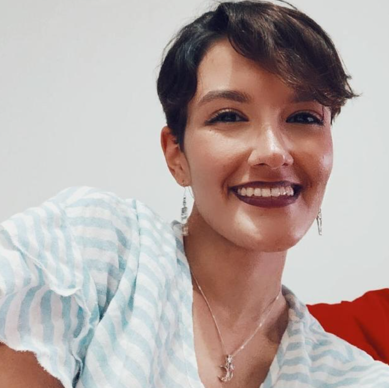

Sobre Mim
Olá! Meu nome é Caroline Calasan, tenho 26 anos e atuo como professora de inglês, além de cursar Análise e Desenvolvimento de Sistemas. Entre uma aula e outra, gosto de explorar minha criatividade escrevendo histórias de fantasia e poesias, hobbies que fazem parte da minha vida há muitos anos. Acredito que a imaginação e a tecnologia podem caminhar juntas, e estou sempre em busca de novos conhecimentos e desafios.
Meus Hobbies
Gosto muito de jogos de tiro e mundo aberto, como Red Dead Redemption, além de jogos de RPG, como The Witcher. Parte importante desse passatempo é me divertir com meus irmãos, normalmente jogamos juntos jogos mais simples, como OverCooked, Just Dance e It Takes Two.
Gosto muito de música, principalmente de bandas que tocam rock alternativo e indie Rock. Minhas bandas favoritas são Arctic Monkeys, Arcade Fire, Cage The Elephant, Foster The People e Twenty One Pilots. Além disso, ouço outros estilos e artistas como Olivia Rodrigo, Sabrina Carpenter e Taylor Swift.
Escrever é uma das expressões de arte que mais gosto. Gosto de escrever poesias sobre assuntos sensíveis e profundos, além de histórias focadas em romance, suspense e fantasia. Acredito que seja uma oportunidade de desenvolver a criatividade e refletir sobre a vida.
Adoro assistir filmes, especialmente de terror e suspense. Um dos meus filmes favoritos são as franquias de "Um lugar Silencioso", "Jogos Mortais" e "Invocação do Mal". Também costumo assistir fantasia e romance, como Harry Potter e Crepúsculo.